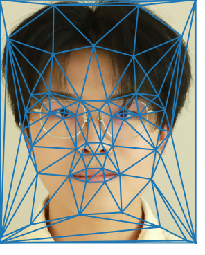

CS 280A: Intro to Computer Vision and Computational Photography, Fall 2024
Jasper Liu
Project 1: Colorizing the Prokudin-Gorskii Photo Collection
Project 2: Fun with Filters and Frequencies!

Project 3: Face Morphing
Project 4 Part A: IMAGE WARPING and MOSAICING